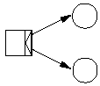
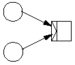
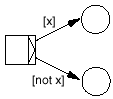
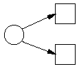
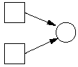

So what's different? An instance of a FSM is always in exactly one state, modeled by the presence of a token in that state. In Petri nets, there can be more than one token. The overall "state" of the Petri net (in the general computer-science sense of the word "state") is the distribution of tokens in the places (called the marking). That's why they're not called states anymore.
Arcs between transitions and places define the input places and output places of the transition. All places with an arc pointing into a transition is an input place for that transition. All places with arc pointing from a transition to the place is an output place for that transition.
In an FSM, when the transition fires, it moves the one token from one state to another. In a Petri net, it consumes exactly one token in each of its input places and produces one token in each of its output places. Thus, the number of tokens before and after a transition fires need not be the same.
It's important to differentiate between the time a transition is enabled (meaning it's ready to fire) and the time it actually fires. A transition is enabled when there is at least one token in each of its input places. Firing the transition is the act of actually moving the tokens.
|  |  |
| AND-split | AND-join |
This is used to model parallel routing, where one or more transitions happen simultaneously or in no particular order. A transition that consumes one token and produces two or more is called an and-split, and the transition that consumes two tokens and produces one is called an and-join, and is used to re-synchronize the workflow after all of the parallel activities are done.
While FSMs do support conditional routing, they can't differentiate between the time of choice between the possible transitions. Petri nets support explicit or-splits, where the choice is made as soon as the previous transition has fired, and implicit or-splits where the choice is simply made by letting the transition that fires first win.
|  |  |
| Explicit OR-split | Implicit OR-split |
To support explicit or-splits we introduce guards. A guard is an expression attached to an arc that must return either true or false. Only if the expression evaluates to true can tokens travel over the arc. Thus if there are two arcs going out of a transition, each with guards that are mutually exclusive (although they need not be), only the arc whose guard evaluates to true will produce a token in its place.
An implicit or-split is modeled by having two arcs going out of the same place. Since the transition that fires first gets the token, and there will be no token for the other transitions to consume. Thus, even though they were enabled up until the point when the first transition fired, the others will not fire.
|  |
| OR-join |
The Petri Net model has been around for many years and has been used extensively in simluation and verification of network protocols, a subject that is very like workflows in many ways. Therefore, it comes as no surprise that the concepts used in workflows maps onto Petri Nets in a very straight-forward way. If you're interested in reading more about this, W.M.P. van der Aalst has written an excellent paper, entitled The Application of Petri Nets to Workflow Management. Or, if you're lazy, you might want to just read the conclusion of the paper.
Being mathematically well-founded brings many benefits. Some of the benefits of using Petri Nets are:
Moreover, some of the common extensions to classical Petri Nets make immediate sense when applied to workflows:
| Last Modified: $Date: 2005/04/27 22:50:59 $ |